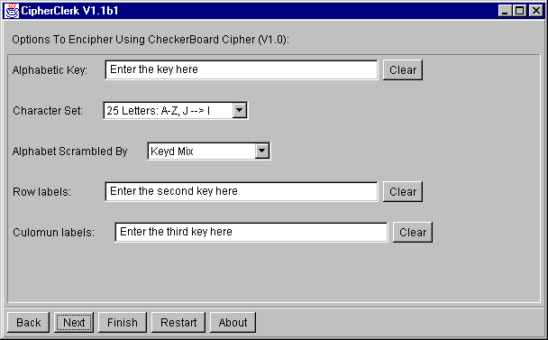

Checkerboard Cipher
Description
A mixed alphabet is is generated and used
to fill a table. The first column and the first line contain the symbols
that will be used to represent the plain text letters:
|
0 |
1 |
2 |
3 |
4 |
| 0 |
E |
N |
T |
R |
H |
| 1 |
K |
Y |
A |
B |
C |
| 2 |
D |
F |
G |
I |
L |
| 3 |
M |
O |
P |
Q |
S |
| 4 |
U |
V |
W |
X |
Z |
To encipher, a letter of the plain text is represented by the labels in
the first column and first row, e. g. N is enciphered as 01
and O is enciphered as 31. Beside a key word and alphabet
you may choose how the mixed alphabet is generated:

The cipher can't conserve the capitalization or text structure. So far,
only numbers 0 to 4(5) are used for the output. It does only accept alphabets
with 25 (=5 x 5) or 36 (=6 x 6) letters. Future versions of CipherClerk's Applet
may offer more possibilities for this.
To proceed, you may